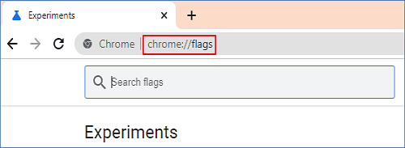
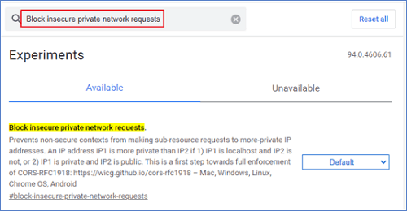
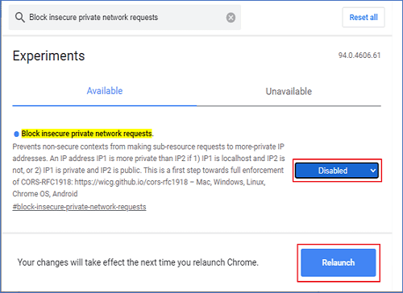
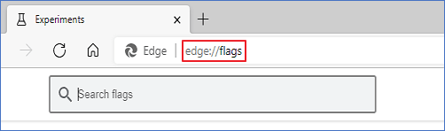
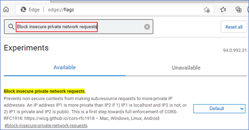
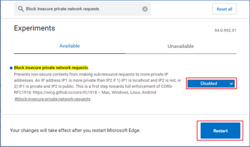
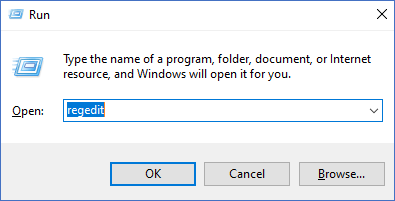
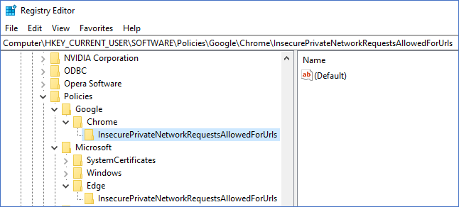
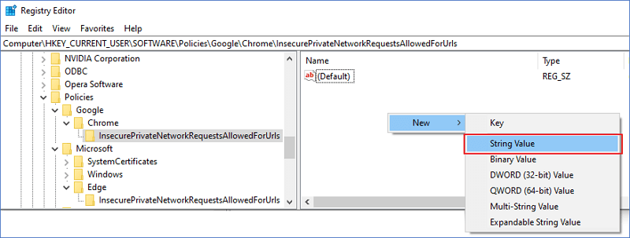
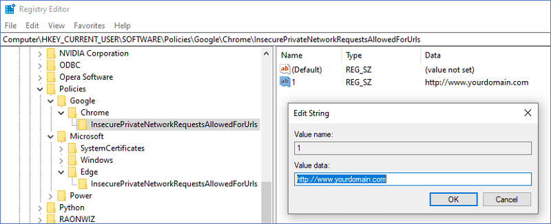

| ### Private Network Access description & Configuration Guide ### |
|---|
|
* What is Private Network Access? ( https://wicg.github.io/private-network-access/ )
Private Network Access (formerly known as CORS-RFC1918) restricts the ability of websites to send requests to servers on private networks. It allows such requests only from secure contexts.
This policy has been applied since version 94 of Google Chrome / Microsoft Edge. [ Related contents ] - Google Chrome : no longer allows insecure public pages to make requests to private or local URLs https://support.google.com/chrome/a/answer/7679408?hl=en#zippy=%2Cchrome - Microsoft Edge : Restrict private network requests to secure contexts https://docs.microsoft.com/en-us/deployedge/microsoft-edge-relnote-stable-channel Therefore as the website you are currently accessing was executed in a non-security context environment (HTTP), some functions have been restricted by this policy. If it is not possible to switch to a security context environment (https), proceed with "Private network access acceptance procedures" as below.. ※ Windows OS is automatically set through the installer.
* Private network access acceptance procedures (Choose between the two options)
1) In the browser address window, enter as follows. → chrome://flags/
 2) Search by entering the setting value. → Block insecure private network requests  3) Set the value of the item to disabled. → Disabled  4) Relaunch browser - Close the entire running browser window and relaunch it to check the normal operation. - It means kill of full browser processes, not current browser process.
1) In the browser address bar, enter as follows. → edge://flags/
 2) Search by entering the setting value. → Block insecure private network requests  3) Set the value of the item to disabled. → Disabled  4) Relaunch browser - Close the entire running browser window and relaunch it to check the normal operation. - It means kill of full browser processes, not current browser process.
① Step 1. Private Network Access Configuration
- It proceeds according to the setting example of each OS.
1) Start → Run → regedit
 2) Create the following key item in the registry editor - Google Chrome → Computer\HKEY_LOCAL_MACHINE\SOFTWARE\Policies\Google\Chrome\InsecurePrivateNetworkRequestsAllowedForUrls - Microsoft Edge → Computer\HKEY_LOCAL_MACHINE\SOFTWARE\Policies\Microsoft\Edge\InsecurePrivateNetworkRequestsAllowedForUrls  3) Create the following string item in the registry editor  4) Edit the generated string value to fit your website - Change the name of the generated string item (e.g. 1, 2, 3, ...) - Change the value of the string to the currently accessed website address (e.g. http://www.yourdomain.com)  ② Step 2. Relaunch Browser - Close the entire running browser window and relaunch it to check the normal operation. - It means kill of full browser processes, not current browser process. |